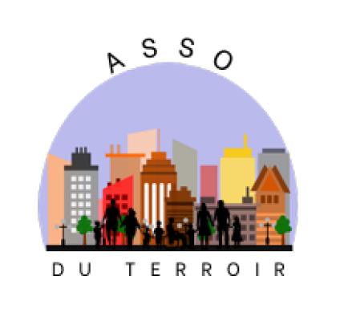

Dewet Alexandre
Concepteur Développeur
d'applications
Bourbourg, Nord
dewetalexandre59@gmail.com
Passionné de l'informatique, je viens d'acquérir mon titre professionnel Concepteur
et Développeur d'Applications.
Mon projet est de devenir soit Architecte Logiciel
soit Formateur selon la demande disponible.
Je recherche avant tout à gagner en expérience dans ce domaine.

Développement Back-End
qzdrsgrdeg rdhse qerhqerheqrh qerh qhre eqrheqhreqh qerhqerh
Développement Front-End
qzdrsgrdeg rdhse qerhqerheqrh qerh qhre eqrheqhreqh qerhqerh
Conception d'applications
qzdrsgrdeg rdhse qerhqerheqrh qerh qhre eqrheqhreqh qerhqerh
Développement d'API
qzdrsgrdeg rdhse qerhqerheqrh qerh qhre eqrheqhreqh qerhqerh
Dans la vie je suis quelqu'un qui est très prévoyant, j'anticipe ce qui peut
être des
obstacles voir des défis à venir. Pour le cas d'un projet, je prend
très au sérieux la
conception.
Ma prévoyance se traduit également par une réactivité aux changements imprévus, en étant
prêt à ajuster les plans
et à trouver des solutions alternatives.
Dans mon travail, je suis reconnu pour mon autonomie et ma
capacité à monter en compétences de manière autodidacte.
Face à des défis ou des problèmes, je suis capable de trouver des solutions de manière
indépendante,
en m'appuyant sur mes connaissances et mon expérience ainsi que sur ma
capacité à faire des recherches.

Travailler dans une équipe soudée et motivée est essentiel pour moi, car
cela favorise la créativité, la synergie et la réussite collective des projets.
Dans une équipe, je sais exprimer mes avis de manière constructive et écouter ceux des
autres.
Je favorise le dialogue pour résoudre les conflits
et maintenir une atmosphère positive.
Travailler ensemble est pour moi source de motivation et de réussite.
Dans mes expériences antérieures dans le domaine du commerce, j'ai appris l'importance
fondamentale de satisfaire les clients.
Cela m'a permis de développer des compétences pour comprendre leurs besoins, répondre à
leurs questions et résoudre leurs problèmes
de manière proactive et professionnelle.
Je crois fermement que la satisfaction du client est la clé du succès dans tout domaine
d'activité.
Expérience professionnelle
CONCEPTEUR DEVELOPPEUR D'APPLICATIONS
08/2023 - 11/2023 à INSY2S Lille
DEVELOPPEUR WEB / WEB MOBILE
06/2022 - 09/2022 à INSY2S Lille
INFORMATIQUE
12/2018 à Infoplan Grande-Synthe
EMPLOYÉ COMMERCIAL
04/2019 - 05/2019 à Kandy Bourbourg
Formation
Titre professionnel Concepteur Développeur d'Applications
10/2022 - 11/2023 à l'AFPA de Roubaix
TITRE PROFESSIONNEL Développeur web et web mobile
02/2022 - 10/2022 à l'AFPA de Roubaix
1er année de BTS Services Informatique aux Organisations
2020 - 2021 avec le CNED à Distance
BAC PRO COMMERCE EN ALTERNANCE
09/2012 - 02/2015 à Altern'emploi de Coudekerque-Branche
Compétences
Langages de programmation :
Java - PHP - C#
SQL - PL-SQL
XML (Maven)
HTML - CSS - Javascript/TypeScript
Conception :
UML - Merise
Frameworks / logiciels Back-end :
SPRING (IOC, MVC, DATA JPA, SECURITY, BOOT)
HIBERNATE - JENKINS - MAVEN - JUNIT
Stripe - Keycloak
IDE :
IntelliJ IDEA Community
Visual Studio Code
Frameworks / logiciels Front-end :
ANGULAR - LARAVEL
TAILWIND - BOOTSTRAP
Outils :
SCRUM - Figma - Trello - Jira
GIT (gitLab / gitHub)
SGBD :
phpMyAdmin - postgres
Atypik House

Application de résérvation et de mise en location de logements
atypique.
Réalisé en PHP Laravel, HTML-CSS-JavaScript, TailwindCSS.
GoldLine Aviation

Application fictif de gestion et de résérvation de vol pour
aéroport.
Réalisé en Java SpringBoot - Angular - Tailwind - Keycloak


Association Rue du terroir
Application mobile pour l'association Rue du Terroir de villeneuve
d'ascq.
Réalisé en Java SpringBoot - Angular - Tailwind - Keycloak

üé®Figurines W40k‚öîÔ∏è
J'adore peindre des figurines Warhammer 40k, en particulier les Nécrons (et probablement d'autres armée plus tard qui sait). C'est mon moyen de me détendre et de laisser libre cours à ma créativité. J'aimerai aussi faire de futures batailles épiques !
üéÆJeux vid√©osüåü
"Quand je ne suis pas en train de peindre des figurines Warhammer 40k, vous me trouverez probablement en train de plonger dans l'univers des jeux vidéo. C'est ma façon de m'évader et de vivre des aventures incroyables, que ce soit en explorant des mondes fantastiques ou en affrontant mes amis dans des parties endiablées !"
üì∫Anim√©süòÑ
De temps en temps, je me fais des sessions chill devant des animés. C'est comme une pause bien méritée où je plonge dans des aventures délirantes et des univers totalement fous. Que ce soit pour rigoler, frissonner ou juste passer un bon moment, les animés sont toujours là pour me divertir.